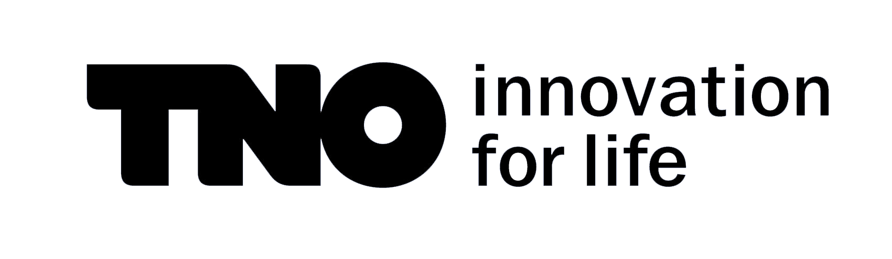
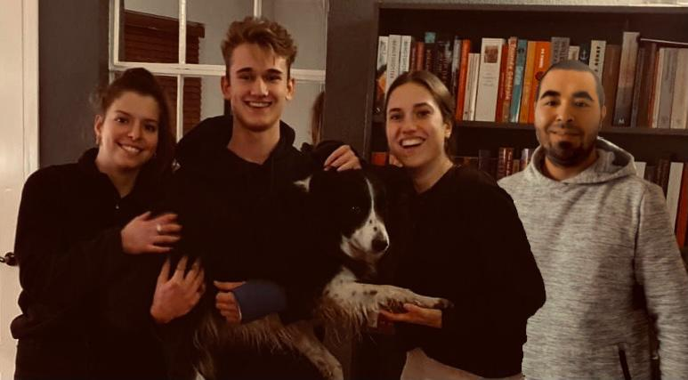
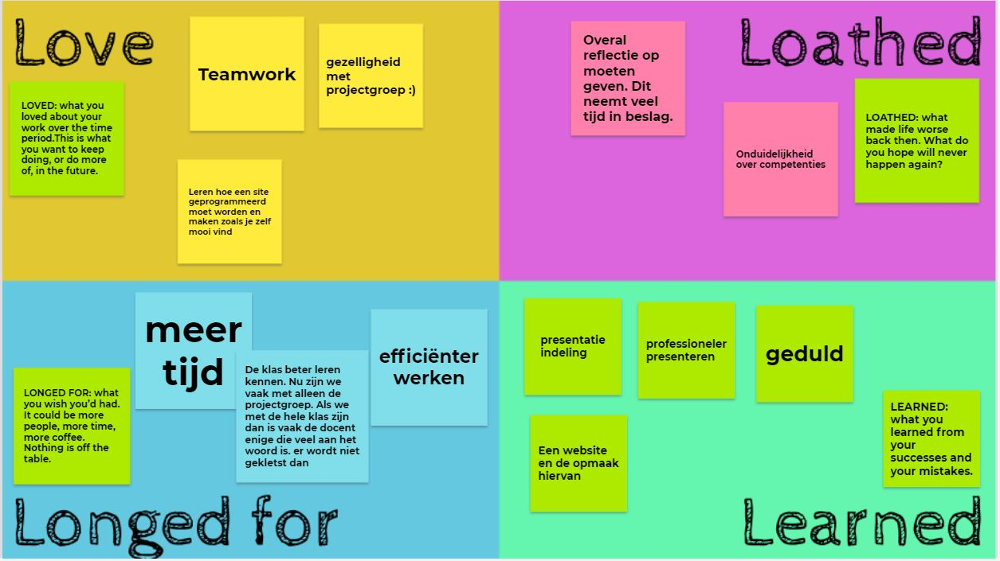

Smart Project
Op deze pagina staat alle informatie over de samenwerking tijdens het project dat we hebben uitgevoerd bij TNO. Het gaat over Digital Twins toepassen bij het MKB. Onze opdrachtgever is Jeroen. Onze projectgroep bestaat uit Rafke Niemans, Sjoerd Meeuwsen, Jorg Akihary en mijzelf.


Samenwerking
Ten eerste ga ik terugkijken op het verloop van de samenwerking. We konden goed met elkaar overweg, er is veel gelachen tijdens de meetings. Naast de gezelligheid, konden we ook goed op een serieuze manier met elkaar samenwerken. We gaven op tijd aan als er serieus gewerkt moest worden en deden hier dan ook ons best voor. Gelukkig voelden we allemaal aan wanneer het tijd was voor een pauze. We hielden goed bij wat er elke week gedaan moest worden en schreven onze activiteiten op in het logboek.Iets wat opviel is dat Jorg en Sjoerd vaak te laat kwamen. Hier hadden we geen problemen mee, ze communiceerden dit altijd netjes in de groepsapp. Het kwam bij iedereen wel eens voor dat ze niet bij een meeting aanwezig konden zijn. We maakten elke meeting met Jeroen of een ander bedrijf altijd notulen. Vaak nam ik de rol van notulen maken op me, omdat ik het lastig vind om veel initiatief te nemen tijdens meetings met bedrijven. Hier heb ik het op Avans ook elk blok met mijn slb'er over. Ook waren er privé-omstandigheden waarom ik me er niet fijn bij voelde om op de voorgrond te treden. Mijn teamgenoten die op de hoogte zijn van deze omstandigheden hebben hier begrip voor en helpen me hier graag bij.
Het is een hele fijne projectgroep en ik ben blij dat ik met ze heb kunnen samenwerken. Ik denk dat we veel van elkaar hebben geleerd.
Teamcharter
Wij hebben een teamcharter gemaakt.Bij lifestyle is te lezen dat wij niet zo streng zijn met te laat komen. We zijn niet streng voor elkaar. De enige 'regels' die we hebben is dat wij op vaste dagen samenkomen met de projectgroep. Soms zijn teamgenoten verhinderd door bijvoorbeeld werk, maar dat overkomt iedereen wel eens. Ook werken wij in de ochtend/middag aan het project, we beginnen meestal rond een uur of 10, omdat niet iedereen ochtendmens is in de groep.
Bij teamculture staat dat respect, loyaliteit en discipline voor ons belangrijk zijn. We respecteren elkaar als we bijvoorbeeld ergens anders over denken. Als we het ergens niet mee eens zijn laten we dit op een eerlijke en directe manier weten, maar we vinden het belangrijk om dit op een respectvolle manier te doen. Ons team heeft een goede combinatie van serieus werken en gezelligheid. Er is altijd ruimte voor een grapje of leuk verhaal over het weekend.
De rollen van ons team zijn goed verdeeld. Uit de Belbintest die we hebben gemaakt kwamen verschillende teamrollen. Deze rollen vullen elkaar op een goede manier aan en we merken dat het een goede combinatie is om in een projectgroep te hebben.
Bij teammanagement staat dat we conflicten niet uit de weg gaan. Als er problemen zijn binnen de groep spreken we elkaar hier op aan, niet achter elkaars rug om. We vinden het belangrijk dat iedereen feedback kan geven én kan ontvangen. Beslissingen nemen we gezamenlijk, we proberen deze goed te onderbouwen voordat ze genomen worden om misstanden te voorkomen. De feedback die we van docenten of opdrachtgevers krijgen proberen we meteen te verwerken, om zo aan hun behoeften te blijven voldoen.
4L Model
Tijdens een pitstop hebben we een 4L-model gemaakt. Hierop staat wat je leuk vond, wat je minder leuk vond, wat je graag wilde en wat je hebt geleerd. Love: teamwork en gezelligheid met de projectgroep was een belangrijke factor tijdens de minor. Het was leerzaam en leuk om met mensen van verschillende opleidingen in één team samen te werken. Hier kwam gezelligheid bij kijken, maar ik heb op een andere manier leren samenwerken. Ook vind ik het leuk dat ik heb geleerd hoe je een site moet coderen met html. Hier had ik voor deze minor nog nooit iets mee gedaan.
Loathed: op alle competenties moet gereflecteerd worden. Dit zijn er behoorlijk veel en het is soms onduidelijk hoe de competenties ingevuld moeten worden. Dit nam mega veel tijd in beslag.
Longed for: meer tijd, vooral bij sommige weekopdrachten. Ook leek het me leuk om de klas in zijn geheel beter te leren kennen, dit ging natuurlijk moeilijk omdat bijna alles online was. Efficiënter werken was bijvoorbeeld bij het maken van dit portfolio zeker van pas gekomen.
Learned: ik heb geleerd om een professionele presentatie te houden en te maken. Wij hebben voor ons project veel gecommuniceerd met verschillende bedrijven. Dit was erg leerzaam. Ook heb ik geleerd om geduld te hebben, als dingen bijvoorbeeld niet meteen lukte. Met name bij technology. Een website maken en de opmaak hiervan is een groot onderdeel van wat ik heb geleerd. Ik merk ook dat ik er steeds handiger in word.